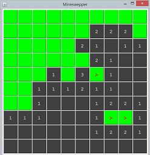

Unfortunately, you have only little time to complete this mini-assignment. The pre-requisite for this assignment is: You shall be able to program "SwingPhoneApp" in the "Exercises: Graphics Programming".
The steps to do this assignment are:
- Read the article. Study the class diagram.
- Create a new Java Project. Create a new package "minesweeper". Create and copy all the classes.
- Do TODO 1 and run the program (2/10 points).
- Do TODO 2, 3, 4 and run the program.
- Do TODO 5, 6, 7, ... (5/10 points).
- Do the extra credits.
Rules of Game
You could wiki "Mine Sweeper" to understand the rules of the game.
Mine Sweeper is a single-player mind game. The objective is to clear a rectangular mine field containing hidden "mines" without detonating any of them, with help from clues about the number of neighboring mines in the revealed cells. You left-click to reveal a cell; and right-click on a cell to plant/remove a flag marking suspicious mine. You win if all the cells not containing mines are revealed; you lose if you reveal a cell containing a mine.
GUI
Let's start with the GUI.
Class Design
We could simply use 10x10 JButtons arranged in 10x10 GridLayout on a JPanel/JFrame's ContentPane. However, it is hard to identify the row and column of the JButton triggering an event.
For better OO and modular design, we design FIVE classes (in a package called minesweeper) as shown in the above class diagram:
- MineSweeperConstants: to store the named constants such as ROWS and COLS, which can be referred to as
MineSweeperConstants.ROWSandMineSweeperConstants.COLS. - Cell: We customize the
JButton, by creating a subclass calledCell, with additional variablesrow,coland its states (isMined,isRevealed,isFlagged), to model each cell of the game board. TheCellhas its own methods topaint()itself. - GameBoardPanel: We also customize the
JPanel, by creating a subclass calledGameBoardPanel, to hold the grid of 9x9Cells (JButtons). Similar toCell, theGameBoardPanelhas its own methods topaint()itself. - MineSweeperMain: We further customize the
JFrame, by creating a subclass calledMineSweeperMain, to hold theGameBoardPanel(JPanel) in itsContentPane. - MineMap: A class called
MineMapis designed to hold the mines in a 2D boolean array. The methodnewMineMap()can be used to generate a new mine map for a new game.
Package minesweeper
All the classes are kept under a package called minesweeper.
- In Eclipse/NetBeans/VSCode, first create a "Java Project" called "MineSweeper"; then create a new package (new ⇒ package) also called
minesweeper. You can then create the classes under theminesweeperpackage. - If you are using JDK/TextEditor, create a sub-directory called
minesweeperand place the classes under the sub-directory.
The MineSweeperConstants Class
This class defines the named constants used by many classes, e.g. ROWS and COLS. To refer to these static constants, use MineSweeperConstants.ROWS and MineSweeperConstants.COLS.
package minesweeper;
/**
* Define the name-constants used in many classes of the game.
*/
public class MineSweeperConstants {
/** Number of rows */
public static final int ROWS = 10;
/** Number of columns */
public static final int COLS = 10;
}The Cell Class - A Customized Subclass of Subclass javax.swing.JButton
Instead of using raw JButton, we shall customize (subclass) JButton called Cell, to include the row/column and states (isMined, isRevealed, isFlagged). It can also paint itself based on the status on the cell via paint().
package minesweeper;
import java.awt.Color;
import java.awt.Font;
import javax.swing.JButton;
/**
* The Cell class model the cells of the MineSweeper, by customizing (subclass)
* the javax.swing.JButton to include row/column and states.
*/
public class Cell extends JButton {
private static final long serialVersionUID = 1L; // to prevent serial warning
// Define named constants for JButton's colors and fonts
// to be chosen based on cell's state
public static final Color BG_NOT_REVEALED = Color.GREEN;
public static final Color FG_NOT_REVEALED = Color.RED; // flag, mines
public static final Color BG_REVEALED = Color.DARK_GRAY;
public static final Color FG_REVEALED = Color.YELLOW; // number of mines
public static final Font FONT_NUMBERS = new Font("Monospaced", Font.BOLD, 20);
// Define properties (package-visible)
/** The row and column number of the cell */
int row, col;
/** Already revealed? */
boolean isRevealed;
/** Is a mine? */
boolean isMined;
/** Is Flagged by player? */
boolean isFlagged;
/** Constructor */
public Cell(int row, int col) {
super(); // JTextField
this.row = row;
this.col = col;
// Set JButton's default display properties
super.setFont(FONT_NUMBERS);
}
/** Reset this cell, ready for a new game */
public void newGame(boolean isMined) {
this.isRevealed = false; // default
this.isFlagged = false; // default
this.isMined = isMined; // given
super.setEnabled(true); // enable button
super.setText(""); // display blank
paint();
}
/** Paint itself based on its status */
public void paint() {
super.setForeground(isRevealed? FG_REVEALED: FG_NOT_REVEALED);
super.setBackground(isRevealed? BG_REVEALED: BG_NOT_REVEALED);
}
}The MineMap class
The MineMap class contains the location of the mines. For simplicity, I hardcoded a mine map. You may try to generate one automatically.
package minesweeper;
// "import static" constants allow us to refer to as
// ROWS (shorthand) instead of MineSweeperConstants.ROWS
import static minesweeper.MineSweeperConstants.ROWS;
import static minesweeper.MineSweeperConstants.COLS;
/**
* Define the locations of mines
*/
public class MineMap {
// package access
int numMines;
boolean[][] isMined = new boolean[ROWS][COLS];
// default is false
// Constructor
public MineMap() {
super();
}
// Allow user to change the rows and cols
public void newMineMap(int numMines) {
this.numMines = numMines;
// Hardcoded for illustration and testing, assume numMines=10
isMined[0][0] = true;
isMined[5][2] = true;
isMined[9][5] = true;
isMined[6][7] = true;
isMined[8][2] = true;
isMined[2][4] = true;
isMined[5][7] = true;
isMined[7][7] = true;
isMined[3][6] = true;
isMined[4][8] = true;
}
}The GameBoardPanel Class - A Customized Subclass of javax.swing.JPanel
The GameBoardPanel contains a 2D array of Cells, and a MineMap.
package minesweeper;
import java.awt.*;
import java.awt.event.*;
import javax.swing.*;
import static minesweeper.MineSweeperConstants.ROWS;
import static minesweeper.MineSweeperConstants.COLS;
public class GameBoardPanel extends JPanel {
private static final long serialVersionUID = 1L; // to prevent serial warning
// Define named constants for UI sizes
public static final int CELL_SIZE = 60; // Cell width and height, in pixels
public static final int CANVAS_WIDTH = CELL_SIZE * COLS; // Game board width/height
public static final int CANVAS_HEIGHT = CELL_SIZE * ROWS;
// Define properties (package-visible)
/** The game board composes of ROWSxCOLS cells */
Cell cells[][] = new Cell[ROWS][COLS];
/** Number of mines */
int numMines = 10;
/** Constructor */
public GameBoardPanel() {
super.setLayout(new GridLayout(ROWS, COLS, 2, 2)); // JPanel
// Allocate the 2D array of Cell, and added into content-pane.
for (int row = 0; row < ROWS; ++row) {
for (int col = 0; col < COLS; ++col) {
cells[row][col] = new Cell(row, col);
super.add(cells[row][col]);
}
}
// [TODO 3] Allocate a common listener as the MouseEvent listener for all the
// Cells (JButtons)
// .........
// [TODO 4] Every cell adds this common listener
// .........
// Set the size of the content-pane and pack all the components
// under this container.
super.setPreferredSize(new Dimension(CANVAS_WIDTH, CANVAS_HEIGHT));
}
// Initialize and re-initialize a new game
public void newGame() {
// Get a new mine map
MineMap mineMap = new MineMap();
mineMap.newMineMap(numMines);
// Reset cells, mines, and flags
for (int row = 0; row < ROWS; row++) {
for (int col = 0; col < COLS; col++) {
// Initialize each cell with/without mine
cells[row][col].newGame(mineMap.isMined[row][col]);
}
}
}
// Return the number of mines [0, 8] in the 8 neighboring cells
// of the given cell at (srcRow, srcCol).
private int getSurroundingMines(int srcRow, int srcCol) {
int numMines = 0;
for (int row = srcRow - 1; row <= srcRow + 1; row++) {
for (int col = srcCol - 1; col <= srcCol + 1; col++) {
// Need to ensure valid row and column numbers too
if (row >= 0 && row < ROWS && col >= 0 && col < COLS) {
if (cells[row][col].isMined) numMines++;
}
}
}
return numMines;
}
// Reveal the cell at (srcRow, srcCol)
// If this cell has 0 mines, reveal the 8 neighboring cells recursively
private void revealCell(int srcRow, int srcCol) {
int numMines = getSurroundingMines(srcRow, srcCol);
cells[srcRow][srcCol].setText(numMines + "");
cells[srcRow][srcCol].isRevealed = true;
cells[srcRow][srcCol].paint(); // based on isRevealed
if (numMines == 0) {
// Recursively reveal the 8 neighboring cells
for (int row = srcRow - 1; row <= srcRow + 1; row++) {
for (int col = srcCol - 1; col <= srcCol + 1; col++) {
// Need to ensure valid row and column numbers too
if (row >= 0 && row < ROWS && col >= 0 && col < COLS) {
if (!cells[row][col].isRevealed) revealCell(row, col);
}
}
}
}
}
// Return true if the player has won (all cells have been revealed or were mined)
public boolean hasWon() {
// ......
return true;
}
// [TODO 2] Define a Listener Inner Class
// .........
}The Main Program
package minesweeper;
import java.awt.*; // Use AWT's Layout Manager
import java.awt.event.*;
import javax.swing.*; // Use Swing's Containers and Components
/**
* The Mine Sweeper Game.
* Left-click to reveal a cell.
* Right-click to plant/remove a flag for marking a suspected mine.
* You win if all the cells not containing mines are revealed.
* You lose if you reveal a cell containing a mine.
*/
public class MineSweeperMain extends JFrame {
private static final long serialVersionUID = 1L; // to prevent serial warning
// private variables
GameBoardPanel board = new GameBoardPanel();
JButton btnNewGame = new JButton("New Game");
// Constructor to set up all the UI and game components
public MineSweeperMain() {
Container cp = this.getContentPane(); // JFrame's content-pane
cp.setLayout(new BorderLayout()); // in 10x10 GridLayout
cp.add(board, BorderLayout.CENTER);
// Add btnNewGame to the south to re-start the game
// ......
board.newGame();
pack(); // Pack the UI components, instead of setSize()
setDefaultCloseOperation(JFrame.EXIT_ON_CLOSE); // handle window-close button
setTitle("Minesweeper");
setVisible(true); // show it
}
// The entry main() method
public static void main(String[] args) {
// [TODO 1] Check Swing program template on how to run the constructor
// .........
}
}[TODO 1]:
- Fill in the
main()method ([TODO 1]), and RUN the program, which shall produce the display. You should try to RUN your program as soon as possible and progressively, instead of waiting for the entire program to be completed. - Continue to [TODO 2] in the next section.
Event Handling
Next, we shall program the event handling.
We shall use a common instance of a Named Inner Class (called CellMouseListener) as the MouseEvent listener for all the JButtons (Cells). We use MouseEvent instead of ActionEvent because we need to differentiate between right-click (to reveal a cell) and left-click (to plant/remove a flag).
[TODO 2]: In GameBoardPanel, write the named inner class CellInputListener, as follows.
// [TODO 2] Define a Listener Inner Class
private class CellMouseListener extends MouseAdapter {
@Override
public void mouseClicked(MouseEvent e) { // Get the source object that fired the Event
Cell sourceCell = (Cell)e.getSource();
// For debugging
System.out.println("You clicked on (" + sourceCell.row + "," + sourceCell.col + ")");
// Left-click to reveal a cell; Right-click to plant/remove the flag.
if (e.getButton() == MouseEvent.BUTTON1) { // Left-button clicked
// [TODO 5] (later, after TODO 3 and 4
// if you hit a mine, game over
// else reveal this cell
//if (sourceCell.isMined) {
// System.out.println("Game Over");
// sourceCell.setText("*");
//} else {
// revealCell(sourceCell.row, sourceCell.col);
//}
} else if (e.getButton() == MouseEvent.BUTTON3) { // right-button clicked
// [TODO 6]
// If this cell is flagged, remove the flag
// else plant a flag.
// ......
}
// [TODO 7] Check if the player has won, after revealing this cell
// ......
}
}[TODO 3] and [TODO 4]: In GameBoardPanel's constructor:
- Declare and allocate a common instance called
listenerof theCellMouseListenerclass:// [TODO 3] ... CellMouseListener listener = new CellMouseListener(); - All
JButtons shall add this common instance as itsMouseEventlistener:// [TODO 4] ... for (int row ...) { for (int col ...) { cells[row][col].addMouseListener(listener); // For all rows and cols } }
[TODO 5]: Complete [TODO 5] to handle left-mouse-click based on the hints, and RUN the program.
[TODO 6]: Complete [TODO 6] to handle right-mouse-click, and RUN the program.
[TODO 7]: Complete [TODO 7]. You have a basic MineSweeper game now.
Some useful methods of JButton are as follows. You can check the Java API for more methods.
setBackground(Color c) // Set the background color of the Component
setForeground(Color c) // Set the text (foreground) color of the Component
setEnabled(true|false) // Enable/Disable the JButton
setFont(Font f) // Set the font used by the ComponentNotes for macOS: On macOS, to set the background color of an JButton, you need to include the following:
btn.setBackground(Color.GREEN);
btn.setOpaque(true);
btn.setBorderPainted(false);Hints and Miscellaneous
- This is a moderately complex program. You need to use the graphics debugger in Eclipse/NetBeans to debug your program logic.
- Check the JDK API.
- You can use the following
staticmethod to pop up a dialog box (JOptionPane) with a message:
Check the API forJOptionPane.showMessageDialog(null, "Game Over!");JOptionPane. - You can remove the
MouseEventlistener once the cell is revealed (i.e., no further processing for mouse-click) inmouseClicked()via:cells[row][col].removeMouseListener(this); - We process
MouseEvent, instead ofActionEvent, for theJButton. Hence, there is no need to useJButton- a simpleJLabelworks as well forMouseEvent.
Requirements
You submission MUST contain these classes: Cell.java (extends JButton), MineMap.java, GameBoardPanel.java (extends JPanel) and MineSweeperMain.java. I revised the templates in April 2022, after the submission.
More Credits
- If a cell with no surrounding mine is revealed, all the 8-neighbors shall be automatically revealed, in a "recursive" manner. Also, there is no need to display the number "0".
- Reset/Restart the game.
- Beautify your graphical interface, e.g., theme (color, font), layout, etc.
- Choice of difficulty levels (e.g,, easy, intermediate, difficult with different board sizes).
- Create a menu bar for options such as "File" ("New Game", "Reset Game", "Exit"), "Options", and "Help" (Use
JMenuBar,JMenu, andJMenuItemclasses). - Create a status bar (
JTextFieldat the south zone ofBorderLayout) to show the messages (e.g., the number of mines remaining). (Google "java swing statusbar"). - Timer (pause/resume), score, progress bar.
- A side panel for command, display, strategy?
- Choice of game board - there are many variations of game board!
- Sound effect, background music, enable/disable sound?
- High score and player name?
- Hints and cheats?
- Theme?
- Use of images and icons?
- Welcome screen?
- Mouse-less interface?
- Handling of first move: Most minesweepers ensure that your first move will not hit a mine? Some even ensure that the first move will always has 0 surrounding mines.
- (Very difficult) Multi-Player network game.
- ......
REFERENCES & RESOURCES